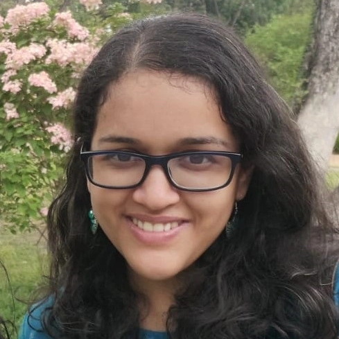

Priya M. Dabak
PhD Student · Literacy & Language Education · Purdue University
I study bilingual and multilingual teachers' classroom language use and language policy enactment. My work draws on multimodality, interactional sociolinguistics, and complex systems approaches to language.
You can contact me at pdabak [at] purdue [dot] edu.

Education
PhD, Curriculum & Instruction — Literacy & Language Education
Purdue University, West Lafayette, IN
- Graduate Certificate in Digital Humanities (ongoing)
B.Ed, English
Savitribai Phule Pune University, Pune, India
M.A., Linguistics
English and Foreign Languages University, Hyderabad, India
B.A., English Language and Literature
Savitribai Phule Pune University, Pune, India
Academic Positions
Graduate Teaching Assistant
Purdue University
Co-teaching
- EDCI 32650 — Introduction to Linguistics and Language Acquisition in Education
Grading
- EDCI 30101 — Inquiry into Teaching and Learning in K–2 (Field Seminar)
- EDCI 30102 — Inquiry into Teaching and Learning in 3–6 (Field Seminar)
- EDCI 30900 — Reading in Middle and Secondary Schools (Field Seminar)
Graduate Research Assistant
Purdue University
- Research assistant for Project PILAR, Purdue University College of Education
Publications
Work Experience
Bengaluru, Karnataka, India
Subject Co-ordinator, Department of English · May 2019–Apr 2021
Served as department head for a 22-member faculty team across two campuses, leading curriculum design, instructional planning, and assessment development for Grades 1–10 English education.
English Faculty · May 2016–Apr 2021
Taught English as a subject and as a medium of instruction across three school levels (Grades 4–10), designing curriculum-aligned lesson plans and assessments for both ESL and English-medium contexts.